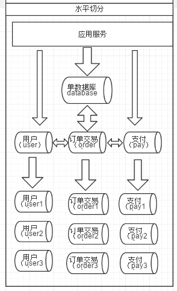
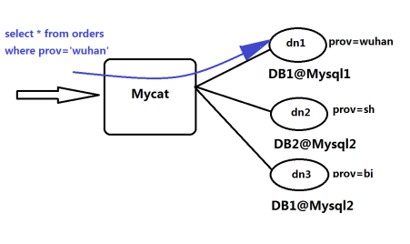

<!DOCTYPE html>


<html lang="zh-CN">
  

    <head>
      <meta charset="utf-8" />
        
      <meta
        name="viewport"
        content="width=device-width, initial-scale=1, maximum-scale=1"
      />
      <title>MyCat入门-基础知识 |  时光荏苒</title>
  <meta name="generator" content="hexo-theme-ayer">
      
      <link rel="shortcut icon" href="/favicon.ico" />
       
<link rel="stylesheet" href="/dist/main.css">

      <link
        rel="stylesheet"
        href="https://cdn.jsdelivr.net/gh/Shen-Yu/cdn/css/remixicon.min.css"
      />
      
<link rel="stylesheet" href="/css/custom.css">
 
      <script src="https://cdn.jsdelivr.net/npm/pace-js@1.0.2/pace.min.js"></script>
       
 

      <link
        rel="stylesheet"
        href="https://cdn.jsdelivr.net/npm/@sweetalert2/theme-bulma@5.0.1/bulma.min.css"
      />
      <script src="https://cdn.jsdelivr.net/npm/sweetalert2@11.0.19/dist/sweetalert2.min.js"></script>

      <!-- mermaid -->
      
      <style>
        .swal2-styled.swal2-confirm {
          font-size: 1.6rem;
        }
      </style>
    <link rel="alternate" href="/atom.xml" title="时光荏苒" type="application/atom+xml">
</head>
  </html>
</html>


<body>
  <div id="app">
    
      
      <canvas width="1777" height="841"
        style="position: fixed; left: 0px; top: 0px; z-index: 99999; pointer-events: none;"></canvas>
      
    <main class="content on">
      <section class="outer">
  <article
  id="post-mycat入门-1"
  class="article article-type-post"
  itemscope
  itemprop="blogPost"
  data-scroll-reveal
>
  <div class="article-inner">
    
    <header class="article-header">
       
<h1 class="article-title sea-center" style="border-left:0" itemprop="name">
  MyCat入门-基础知识
</h1>
 

      
    </header>
     
    <div class="article-meta">
      <a href="/2021/09/22/mycat%E5%85%A5%E9%97%A8-1/" class="article-date">
  <time datetime="2021-09-22T05:44:15.000Z" itemprop="datePublished">2021-09-22</time>
</a> 
  <div class="article-category">
    <a class="article-category-link" href="/categories/%E6%8A%80%E6%9C%AF/">技术</a> / <a class="article-category-link" href="/categories/%E6%8A%80%E6%9C%AF/MyCat/">MyCat</a>
  </div>
  
<div class="word_count">
    <span class="post-time">
        <span class="post-meta-item-icon">
            <i class="ri-quill-pen-line"></i>
            <span class="post-meta-item-text"> 字数统计:</span>
            <span class="post-count">2.6k</span>
        </span>
    </span>

    <span class="post-time">
        &nbsp; | &nbsp;
        <span class="post-meta-item-icon">
            <i class="ri-book-open-line"></i>
            <span class="post-meta-item-text"> 阅读时长≈</span>
            <span class="post-count">8 分钟</span>
        </span>
    </span>
</div>
 
    </div>
      
    <div class="tocbot"></div>


  
    <div class="article-entry" itemprop="articleBody">
       
  <p>原文:<a target="_blank" rel="noopener" href="https://www.yuque.com/ccazhw/tuacvk/vttsnv">https://www.yuque.com/ccazhw/tuacvk/vttsnv</a></p>
<h2 id="基础知识介绍"><a href="#基础知识介绍" class="headerlink" title="基础知识介绍"></a>基础知识介绍</h2><h3 id="需求由来"><a href="#需求由来" class="headerlink" title="需求由来"></a>需求由来</h3><h4 id="OLTP和OLAP"><a href="#OLTP和OLAP" class="headerlink" title="OLTP和OLAP"></a>OLTP和OLAP</h4><p>谈到数据库，必然会引起这两种处理类型</p>
<ol>
<li><strong>联机事务处理</strong> (OLTP)<br>将原始数据传送到数据中心计算，业务处理，在很短的时间给出处理结果</li>
<li><strong>联机分析处理</strong> (OLAP)<br>多维的方式对数据分析，同数据挖掘工具，统计分析工具使用<table>
<thead>
<tr>
<th></th>
<th>OLTP</th>
<th>OLAP</th>
</tr>
</thead>
<tbody><tr>
<td>系统功能</td>
<td>交易</td>
<td>统计分析</td>
</tr>
<tr>
<td>DB 设计</td>
<td>面向事实交易</td>
<td>面向统计</td>
</tr>
<tr>
<td>数据处理</td>
<td></td>
<td><strong>数据量大</strong></td>
</tr>
<tr>
<td>实时性</td>
<td><strong>实时性高</strong></td>
<td></td>
</tr>
<tr>
<td>事务</td>
<td>强一致性</td>
<td>弱事务</td>
</tr>
<tr>
<td>分析要求</td>
<td>低</td>
<td>高</td>
</tr>
</tbody></table>
</li>
</ol>
<h4 id="关系型数据库和NoSQL数据库"><a href="#关系型数据库和NoSQL数据库" class="headerlink" title="关系型数据库和NoSQL数据库"></a>关系型数据库和NoSQL数据库</h4><ul>
<li><p><strong>关系型数据库</strong><br>建立在关系模型上的数据库，主流有oracle、DB2、MS SQL Server和mysql</p>
</li>
<li><p><strong>NoSQL数据库</strong>(Not only SQL)<br>主要分为临时性键值存储（memcached、Redis）、永久性键值存储（ROMA、Redis）、面向文档的数据库（MongoDB、CouchDB）、面向列的数据库（Cassandra、HBase），每种NoSQL都有其特有的使用场景及优点。</p>
</li>
<li><p>主要是由于随着互联网发展，数据量越来越大，对性能要求越来越高，传统数据库存在着先天性的缺陷，即<strong>单机（单库）性能瓶颈，并且扩展困难</strong>。这样既有单机单库瓶颈，却又扩展困难，自然无法满足日益增长的海量数据存储及其性能要求，所以才会出现了各种不同的NoSQL产品，NoSQL根本性的优势在于在云计算时代，简单、易于大规模分布式扩展，并且读写性能非常高。</p>
</li>
</ul>
<table>
<thead>
<tr>
<th></th>
<th>关系型数据库</th>
<th>NoSQL数据库</th>
</tr>
</thead>
<tbody><tr>
<td>特点</td>
<td>数据关系模型基于关系模型，结构化存储，完整性约束 <br>基于二维表及其之间的联系，需要连接、并、交、差、除等数据操作<br>采用结构化的查询语言（SQL）做数据读写<br>操作需要数据的一致性，需要事务甚至是强一致性</td>
<td>非结构化的存储<br>基于多维关系模型<br>具有特有的使用场景</td>
</tr>
<tr>
<td>优点</td>
<td>保持数据的一致性（事务处理）<br>可以进行join等复杂查询 通用化，技术成熟</td>
<td>高并发，大数据下读写能力较强<br>基本支持分布式，易于扩展，可伸缩<br>简单，弱结构化存储</td>
</tr>
<tr>
<td>缺点</td>
<td>数据读写必须经过sql解析，大量数据、高并发下读写性能不足 对数据做读写，或修改数据结构时需要加锁，影响并发操作<br>无法适应非结构化存储<br>扩展困难<br>昂贵、复杂</td>
<td>join等复杂操作能力较弱<br>事务支持较弱<br>通用性差<br>无完整约束复杂业务场景支持较差</td>
</tr>
</tbody></table>
<p>目前NoSQL只能作为传统数据库的补充而不能将其替代，为了解决传统数据库不支持大规模自动扩展，需要使用第三方软件进行数据切分</p>
<h3 id="数据库切分概述"><a href="#数据库切分概述" class="headerlink" title="数据库切分概述"></a>数据库切分概述</h3><h4 id="数据切分"><a href="#数据切分" class="headerlink" title="数据切分"></a>数据切分</h4><p>将同一数据库中的数据放到多个数据库服务上，以此来降低服务器负载</p>
<h5 id="垂直切分"><a href="#垂直切分" class="headerlink" title="垂直切分"></a>垂直切分</h5><p><strong>将不同的库或表切分到不同的服务中</strong><br>优点：</p>
<ul>
<li>业务简单</li>
<li>系统整合拓展容易</li>
<li>数据维护简单</li>
</ul>
<p>缺点：</p>
<ul>
<li>跨表join需要接口实现，提高了系统的复杂度</li>
<li>存在单库(单表)性能瓶颈</li>
<li>事务处理复杂</li>
</ul>
<h5 id="水平切分"><a href="#水平切分" class="headerlink" title="水平切分"></a>水平切分</h5><p><strong>将同一表中的不同数据切分到不同服务中</strong><br><br>常见拆分规则：</p>
<ol>
<li>按ID求模</li>
<li>按时间求模</li>
<li>按特定字段求模</li>
</ol>
<p>优点：</p>
<ul>
<li>拆分规则抽象好，join操作基本可以数据库做；</li>
<li>不存在单表大数据的高并发瓶颈</li>
<li>应用端改造少</li>
<li>提高系统稳定性和负载</li>
</ul>
<p>缺点：</p>
<ul>
<li>拆分规则不好抽象</li>
<li>事务一致性难以解决</li>
<li>数据拓展时维护量大</li>
<li>跨库join时性能较差</li>
</ul>
<h5 id="共同缺点"><a href="#共同缺点" class="headerlink" title="共同缺点"></a>共同缺点</h5><p>在引入多服务后，<strong>数据一致性，跨节点join，分页，多数据源管理</strong>成为了主要的问题<br>针对数据源管理，目前有两种思路：</p>
<ol>
<li>客户端模式(垂直切分)：<br>每个应用程序配置属于自己的数据源</li>
<li>中间代理层(水平切分)：<br>使用MyCat等中间代理层</li>
</ol>
<h5 id="数据切分的基本原则"><a href="#数据切分的基本原则" class="headerlink" title="数据切分的基本原则"></a>数据切分的基本原则</h5><ol>
<li>能不切分尽量不切分</li>
<li>选择合适的切分规则</li>
<li>通过数据冗余或表分组降低跨库join</li>
<li>业务读取尽量少使用多表join</li>
</ol>
<h3 id="常用技术"><a href="#常用技术" class="headerlink" title="常用技术"></a>常用技术</h3><h4 id="主从复制，读写分离"><a href="#主从复制，读写分离" class="headerlink" title="主从复制，读写分离"></a>主从复制，读写分离</h4><p>使用两个以上相同的数据库，一个主，一个从，主数据库操作时，从数据库相应操作<br>主数据库进行写操作，从数据库执行查询操作<br>优点：</p>
<ul>
<li>主数据库出问题时，从数据库起到备用的效果</li>
<li>写操作和读操作在两个服务上，避免写影响读的效率</li>
</ul>
<h4 id="哨兵模式"><a href="#哨兵模式" class="headerlink" title="哨兵模式"></a>哨兵模式</h4><p>是一种容灾方案<br>哨兵：特殊模式下的redis服务器，存储本身的信息，主服务器，从服务器的信息<br>用一个或多个哨兵来监视写服务器，如果写服务器挂了，找到合适的从服务器来成为主服务器</p>
<h2 id="MyCat简介"><a href="#MyCat简介" class="headerlink" title="MyCat简介"></a>MyCat简介</h2><p><strong>是什么：</strong>开源的分布式数据库系统，面对前端他是一个数据库代理，面对后端调用mysql原生(Native)协议与多个mysql服务器通信<br><strong>干什么：</strong>分表分库，将大表水平分割成N个小表，存储到不同数据库服务中</p>
<p>到今天(2021/9/24)MyCat后端支持MySQL、SQL Server、Oracle、DB2、PostgreSQL等主流数据库，也支持MongoDB这种新型NoSQL方式的存储</p>
<p><strong>对DBA：</strong>MyCat就是MySQL Server，而MyCat后面连接的MySQL Server，就好象是MySQL的存储引擎,如InnoDB，MyISAM等，因此，MyCat本身并不存储数据，数据是在后端的MySQL上存储的，因此数据可靠性以及事务等都是MySQL保证的，简单的说，MyCat就是MySQL最佳伴侣，它在一定程度上让MySQL拥有了能跟Oracle PK的能力</p>
<p><strong>对软件工程师：</strong>MyCat就是一个近似等于MySQL的数据库服务器，你可以用连接MySQL的方式去连接MyCat（除了端口不同，默认的MyCat端口是8066而非MySQL的3306，因此需要在连接字符串上增加端口信息），大多数情况下，可以用你熟悉的对象映射框架使用MyCat，但建议对于分片表，尽量使用基础的SQL语句，因为这样能达到最佳性能，特别是几千万甚至几百亿条记录的情况下。</p>
<p><strong>对架构师：</strong>MyCat是一个强大的数据库中间件，不仅仅可以用作读写分离、以及分表分库、容灾备份，而且可以用于多租户应用开发、云平台基础设施、让你的架构具备很强的适应性和灵活性，借助于即将发布的MyCat智能优化模块，系统的数据访问瓶颈和热点一目了然，根据这些统计分析数据，你可以自动或手工调整后端存储，将不同的表映射到不同存储引擎上，而整个应用的代码一行也不用改变。</p>
<h3 id="MyCat原理"><a href="#MyCat原理" class="headerlink" title="MyCat原理"></a>MyCat原理</h3><p>拦截用户发送过来的SQL语句，首先对SQL语句做了一些特定的分析：如<strong>分片分析、路由分析、读写分离分析、缓存分析等，然后将此SQL发往后端的真实数据库，并将返回的结果做适当的处理，最终再返回给用户</strong>。<br><br>当Mycat收到一个SQL时，会<strong>先解析这个SQL，查找涉及到的表，然后看此表的定义，如果有分片规则，则获取到SQL里分片字段的值，并匹配分片函数，得到该SQL对应的分片列表，然后将SQL发往这些分片去执行，最后收集和处理所有分片返回的结果数据，并输出到客户端</strong>。以select * from Orders where prov=?语句为例，查到prov=wuhan，按照分片函数，wuhan返回dn1，于是SQL就发给了MySQL1，去取DB1上的查询结果，并返回给用户。<br>如果上述SQL改为select * from Orders where prov in (‘wuhan’,‘beijing’)，那么，SQL就会发给MySQL1与MySQL2去执行，然后结果集合并后输出给用户。但通常业务中我们的SQL会有Order By 以及Limit翻页语法，此时就涉及到结果集在Mycat端的二次处理，这部分的代码也比较复杂，而最复杂的则属两个表的Join问题，为此，Mycat提出了创新性的ER分片、全局表、HBT（Human Brain Tech)人工智能的Catlet、以及结合Storm/Spark引擎等十八般武艺的解决办法，从而成为目前业界最强大的方案，这就是开源的力量！</p>
<h3 id="使用场景"><a href="#使用场景" class="headerlink" title="使用场景"></a>使用场景</h3><p>Mycat发展到现在，适用的场景已经很丰富，而且不断有新用户给出新的创新性的方案，以下是几个典型的应用场景：</p>
<ul>
<li>单纯的读写分离，此时配置最为简单，支持读写分离，主从切换；</li>
<li>分表分库，对于超过1000万的表进行分片，最大支持1000亿的单表分片；</li>
<li>多租户应用，每个应用一个库，但应用程序只连接Mycat，从而不改造程序本身，实现多租户化；</li>
<li>报表系统，借助于Mycat的分表能力，处理大规模报表的统计；</li>
<li>替代Hbase，分析大数据；</li>
<li>作为海量数据实时查询的一种简单有效方案，比如100亿条频繁查询的记录需要在3秒内查询出来结果，除了基于主键的查询，还可能存在范围查询或其他属性查询，此时Mycat可能是最简单有效的选择。</li>
</ul>
<h2 id="小结"><a href="#小结" class="headerlink" title="小结"></a>小结</h2><ol>
<li>对数据的处理一般分为两种 数据量大和实时性高</li>
<li>nosql无法取代关系型数据库</li>
<li>数据库切分有两种 <blockquote>
<p>垂直切分：将数据库和表放到不同的服务<br>水平切分：将一个表中的数据放到不同节点上</p>
</blockquote>
</li>
<li></li>
</ol>
 
      <!-- reward -->
      
      <div id="reword-out">
        <div id="reward-btn">
          打赏
        </div>
      </div>
      
    </div>
    

    <!-- copyright -->
    
    <div class="declare">
      <ul class="post-copyright">
        <li>
          <i class="ri-copyright-line"></i>
          <strong>版权声明： </strong>
          
          本博客所有文章除特别声明外，著作权归作者所有。转载请注明出处！
          
        </li>
      </ul>
    </div>
    
    <footer class="article-footer">
       
<div class="share-btn">
      <span class="share-sns share-outer">
        <i class="ri-share-forward-line"></i>
        分享
      </span>
      <div class="share-wrap">
        <i class="arrow"></i>
        <div class="share-icons">
          
          <a class="weibo share-sns" href="javascript:;" data-type="weibo">
            <i class="ri-weibo-fill"></i>
          </a>
          <a class="weixin share-sns wxFab" href="javascript:;" data-type="weixin">
            <i class="ri-wechat-fill"></i>
          </a>
          <a class="qq share-sns" href="javascript:;" data-type="qq">
            <i class="ri-qq-fill"></i>
          </a>
          <a class="douban share-sns" href="javascript:;" data-type="douban">
            <i class="ri-douban-line"></i>
          </a>
          <!-- <a class="qzone share-sns" href="javascript:;" data-type="qzone">
            <i class="icon icon-qzone"></i>
          </a> -->
          
          <a class="facebook share-sns" href="javascript:;" data-type="facebook">
            <i class="ri-facebook-circle-fill"></i>
          </a>
          <a class="twitter share-sns" href="javascript:;" data-type="twitter">
            <i class="ri-twitter-fill"></i>
          </a>
          <a class="google share-sns" href="javascript:;" data-type="google">
            <i class="ri-google-fill"></i>
          </a>
        </div>
      </div>
</div>

<div class="wx-share-modal">
    <a class="modal-close" href="javascript:;"><i class="ri-close-circle-line"></i></a>
    <p>扫一扫，分享到微信</p>
    <div class="wx-qrcode">
      
    </div>
</div>

<div id="share-mask"></div>  
  <ul class="article-tag-list" itemprop="keywords"><li class="article-tag-list-item"><a class="article-tag-list-link" href="/tags/MyCat/" rel="tag">MyCat</a></li><li class="article-tag-list-item"><a class="article-tag-list-link" href="/tags/mysql/" rel="tag">mysql</a></li><li class="article-tag-list-item"><a class="article-tag-list-link" href="/tags/%E6%95%B0%E6%8D%AE%E5%BA%93/" rel="tag">数据库</a></li></ul>

    </footer>
  </div>

   
  <nav class="article-nav">
    
      <a href="/2021/09/23/%E6%8C%87%E4%BB%A4%E4%BB%93%E5%BA%93/" class="article-nav-link">
        <strong class="article-nav-caption">上一篇</strong>
        <div class="article-nav-title">
          
            指令仓库
          
        </div>
      </a>
    
    
      <a href="/2021/09/14/%E5%9F%BA%E4%BA%8ESTOMP%E5%8D%8F%E8%AE%AE%E6%95%B4%E5%90%88WebSocket/" class="article-nav-link">
        <strong class="article-nav-caption">下一篇</strong>
        <div class="article-nav-title">基于STOMP协议整合WebSocket</div>
      </a>
    
  </nav>

   
<!-- valine评论 -->
<div id="vcomments-box">
  <div id="vcomments"></div>
</div>
<script src="//cdn1.lncld.net/static/js/3.0.4/av-min.js"></script>
<script src="https://cdn.jsdelivr.net/npm/valine@1.4.14/dist/Valine.min.js"></script>
<script>
  new Valine({
    el: "#vcomments",
    app_id: "GarVmH7U8tdNPtBDdKd9UljM-gzGzoHsz",
    app_key: "EjHY36rd6I40oLq85Dy3FAFi",
    path: window.location.pathname,
    avatar: "monsterid",
    placeholder: "给我的文章加点评论吧~",
    recordIP: true,
  });
  const infoEle = document.querySelector("#vcomments .info");
  if (infoEle && infoEle.childNodes && infoEle.childNodes.length > 0) {
    infoEle.childNodes.forEach(function (item) {
      item.parentNode.removeChild(item);
    });
  }
</script>
<style>
  #vcomments-box {
    padding: 5px 30px;
  }

  @media screen and (max-width: 800px) {
    #vcomments-box {
      padding: 5px 0px;
    }
  }

  #vcomments-box #vcomments {
    background-color: #fff;
  }

  .v .vlist .vcard .vh {
    padding-right: 20px;
  }

  .v .vlist .vcard {
    padding-left: 10px;
  }
</style>

 
   
     
</article>

</section>
      <footer class="footer">
  <div class="outer">
    <ul>
      <li>
        Copyrights &copy;
        2021
        <i class="ri-heart-fill heart_icon"></i> Htr
      </li>
    </ul>
    <ul>
      <li>
        
      </li>
    </ul>
    <ul>
      <li>
        
        
        <span>
  <span><i class="ri-user-3-fill"></i>访问人数:<span id="busuanzi_value_site_uv"></span></span>
  <span class="division">|</span>
  <span><i class="ri-eye-fill"></i>浏览次数:<span id="busuanzi_value_page_pv"></span></span>
</span>
        
      </li>
    </ul>
    <ul>
      
    </ul>
    <ul>
      
    </ul>
    <ul>
      <li>
        <!-- cnzz统计 -->
        
      </li>
    </ul>
  </div>
</footer>    
    </main>
    <div class="float_btns">
      <div class="totop" id="totop">
  <i class="ri-arrow-up-line"></i>
</div>

<div class="todark" id="todark">
  <i class="ri-moon-line"></i>
</div>

    </div>
    <aside class="sidebar on">
      <button class="navbar-toggle"></button>
<nav class="navbar">
  
  <div class="logo">
    <a href="/"></a>
  </div>
  
  <ul class="nav nav-main">
    
    <li class="nav-item">
      <a class="nav-item-link" href="/">主页</a>
    </li>
    
    <li class="nav-item">
      <a class="nav-item-link" href="/archives">归档</a>
    </li>
    
    <li class="nav-item">
      <a class="nav-item-link" href="/categories">分类</a>
    </li>
    
    <li class="nav-item">
      <a class="nav-item-link" href="/tags">标签</a>
    </li>
    
    <li class="nav-item">
      <a class="nav-item-link" href="/friends">友链</a>
    </li>
    
    <li class="nav-item">
      <a class="nav-item-link" href="/about">关于我</a>
    </li>
    
  </ul>
</nav>
<nav class="navbar navbar-bottom">
  <ul class="nav">
    <li class="nav-item">
      
      <a class="nav-item-link nav-item-search"  title="搜索">
        <i class="ri-search-line"></i>
      </a>
      
      
      <a class="nav-item-link" target="_blank" href="/atom.xml" title="RSS Feed">
        <i class="ri-rss-line"></i>
      </a>
      
    </li>
  </ul>
</nav>
<div class="search-form-wrap">
  <div class="local-search local-search-plugin">
  <input type="search" id="local-search-input" class="local-search-input" placeholder="Search...">
  <div id="local-search-result" class="local-search-result"></div>
</div>
</div>
    </aside>
    <div id="mask"></div>

<!-- #reward -->
<div id="reward">
  <span class="close"><i class="ri-close-line"></i></span>
  <p class="reward-p"><i class="ri-cup-line"></i>请我喝杯咖啡吧~</p>
  <div class="reward-box">
    
    <div class="reward-item">
      
      <span class="reward-type">支付宝</span>
    </div>
    
    
    <div class="reward-item">
      
      <span class="reward-type">微信</span>
    </div>
    
  </div>
</div>
    
<script src="/js/jquery-3.6.0.min.js"></script>
 
<script src="/js/lazyload.min.js"></script>

<!-- Tocbot -->
 
<script src="/js/tocbot.min.js"></script>

<script>
  tocbot.init({
    tocSelector: ".tocbot",
    contentSelector: ".article-entry",
    headingSelector: "h1, h2, h3, h4, h5, h6",
    hasInnerContainers: true,
    scrollSmooth: true,
    scrollContainer: "main",
    positionFixedSelector: ".tocbot",
    positionFixedClass: "is-position-fixed",
    fixedSidebarOffset: "auto",
  });
</script>

<script src="https://cdn.jsdelivr.net/npm/jquery-modal@0.9.2/jquery.modal.min.js"></script>
<link
  rel="stylesheet"
  href="https://cdn.jsdelivr.net/npm/jquery-modal@0.9.2/jquery.modal.min.css"
/>
<script src="https://cdn.jsdelivr.net/npm/justifiedGallery@3.7.0/dist/js/jquery.justifiedGallery.min.js"></script>

<script src="/dist/main.js"></script>

<!-- ImageViewer -->
 <!-- Root element of PhotoSwipe. Must have class pswp. -->
<div class="pswp" tabindex="-1" role="dialog" aria-hidden="true">

    <!-- Background of PhotoSwipe. 
         It's a separate element as animating opacity is faster than rgba(). -->
    <div class="pswp__bg"></div>

    <!-- Slides wrapper with overflow:hidden. -->
    <div class="pswp__scroll-wrap">

        <!-- Container that holds slides. 
            PhotoSwipe keeps only 3 of them in the DOM to save memory.
            Don't modify these 3 pswp__item elements, data is added later on. -->
        <div class="pswp__container">
            <div class="pswp__item"></div>
            <div class="pswp__item"></div>
            <div class="pswp__item"></div>
        </div>

        <!-- Default (PhotoSwipeUI_Default) interface on top of sliding area. Can be changed. -->
        <div class="pswp__ui pswp__ui--hidden">

            <div class="pswp__top-bar">

                <!--  Controls are self-explanatory. Order can be changed. -->

                <div class="pswp__counter"></div>

                <button class="pswp__button pswp__button--close" title="Close (Esc)"></button>

                <button class="pswp__button pswp__button--share" style="display:none" title="Share"></button>

                <button class="pswp__button pswp__button--fs" title="Toggle fullscreen"></button>

                <button class="pswp__button pswp__button--zoom" title="Zoom in/out"></button>

                <!-- Preloader demo http://codepen.io/dimsemenov/pen/yyBWoR -->
                <!-- element will get class pswp__preloader--active when preloader is running -->
                <div class="pswp__preloader">
                    <div class="pswp__preloader__icn">
                        <div class="pswp__preloader__cut">
                            <div class="pswp__preloader__donut"></div>
                        </div>
                    </div>
                </div>
            </div>

            <div class="pswp__share-modal pswp__share-modal--hidden pswp__single-tap">
                <div class="pswp__share-tooltip"></div>
            </div>

            <button class="pswp__button pswp__button--arrow--left" title="Previous (arrow left)">
            </button>

            <button class="pswp__button pswp__button--arrow--right" title="Next (arrow right)">
            </button>

            <div class="pswp__caption">
                <div class="pswp__caption__center"></div>
            </div>

        </div>

    </div>

</div>

<link rel="stylesheet" href="https://cdn.jsdelivr.net/npm/photoswipe@4.1.3/dist/photoswipe.min.css">
<link rel="stylesheet" href="https://cdn.jsdelivr.net/npm/photoswipe@4.1.3/dist/default-skin/default-skin.min.css">
<script src="https://cdn.jsdelivr.net/npm/photoswipe@4.1.3/dist/photoswipe.min.js"></script>
<script src="https://cdn.jsdelivr.net/npm/photoswipe@4.1.3/dist/photoswipe-ui-default.min.js"></script>

<script>
    function viewer_init() {
        let pswpElement = document.querySelectorAll('.pswp')[0];
        let $imgArr = document.querySelectorAll(('.article-entry img:not(.reward-img)'))

        $imgArr.forEach(($em, i) => {
            $em.onclick = () => {
                // slider展开状态
                // todo: 这样不好，后面改成状态
                if (document.querySelector('.left-col.show')) return
                let items = []
                $imgArr.forEach(($em2, i2) => {
                    let img = $em2.getAttribute('data-idx', i2)
                    let src = $em2.getAttribute('data-target') || $em2.getAttribute('src')
                    let title = $em2.getAttribute('alt')
                    // 获得原图尺寸
                    const image = new Image()
                    image.src = src
                    items.push({
                        src: src,
                        w: image.width || $em2.width,
                        h: image.height || $em2.height,
                        title: title
                    })
                })
                var gallery = new PhotoSwipe(pswpElement, PhotoSwipeUI_Default, items, {
                    index: parseInt(i)
                });
                gallery.init()
            }
        })
    }
    viewer_init()
</script> 
<!-- MathJax -->

<!-- Katex -->

<!-- busuanzi  -->
 
<script src="/js/busuanzi-2.3.pure.min.js"></script>
 
<!-- ClickLove -->

<!-- ClickBoom1 -->

<!-- ClickBoom2 -->
 
<script src="/js/clickBoom2.js"></script>
 
<!-- CodeCopy -->
 
<link rel="stylesheet" href="/css/clipboard.css">
 <script src="https://cdn.jsdelivr.net/npm/clipboard@2/dist/clipboard.min.js"></script>
<script>
  function wait(callback, seconds) {
    var timelag = null;
    timelag = window.setTimeout(callback, seconds);
  }
  !function (e, t, a) {
    var initCopyCode = function(){
      var copyHtml = '';
      copyHtml += '<button class="btn-copy" data-clipboard-snippet="">';
      copyHtml += '<i class="ri-file-copy-2-line"></i><span>COPY</span>';
      copyHtml += '</button>';
      $(".highlight .code pre").before(copyHtml);
      $(".article pre code").before(copyHtml);
      var clipboard = new ClipboardJS('.btn-copy', {
        target: function(trigger) {
          return trigger.nextElementSibling;
        }
      });
      clipboard.on('success', function(e) {
        let $btn = $(e.trigger);
        $btn.addClass('copied');
        let $icon = $($btn.find('i'));
        $icon.removeClass('ri-file-copy-2-line');
        $icon.addClass('ri-checkbox-circle-line');
        let $span = $($btn.find('span'));
        $span[0].innerText = 'COPIED';
        
        wait(function () { // 等待两秒钟后恢复
          $icon.removeClass('ri-checkbox-circle-line');
          $icon.addClass('ri-file-copy-2-line');
          $span[0].innerText = 'COPY';
        }, 2000);
      });
      clipboard.on('error', function(e) {
        e.clearSelection();
        let $btn = $(e.trigger);
        $btn.addClass('copy-failed');
        let $icon = $($btn.find('i'));
        $icon.removeClass('ri-file-copy-2-line');
        $icon.addClass('ri-time-line');
        let $span = $($btn.find('span'));
        $span[0].innerText = 'COPY FAILED';
        
        wait(function () { // 等待两秒钟后恢复
          $icon.removeClass('ri-time-line');
          $icon.addClass('ri-file-copy-2-line');
          $span[0].innerText = 'COPY';
        }, 2000);
      });
    }
    initCopyCode();
  }(window, document);
</script>
 
<!-- CanvasBackground -->

<script>
  if (window.mermaid) {
    mermaid.initialize({ theme: "forest" });
  }
</script>


    
    

  </div>
</body>

</html>